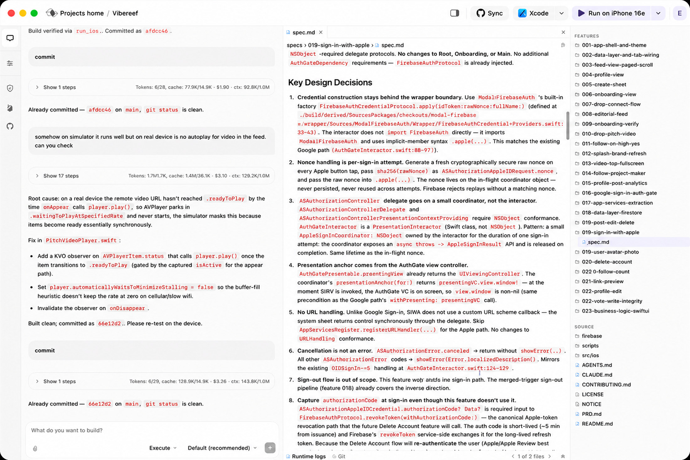
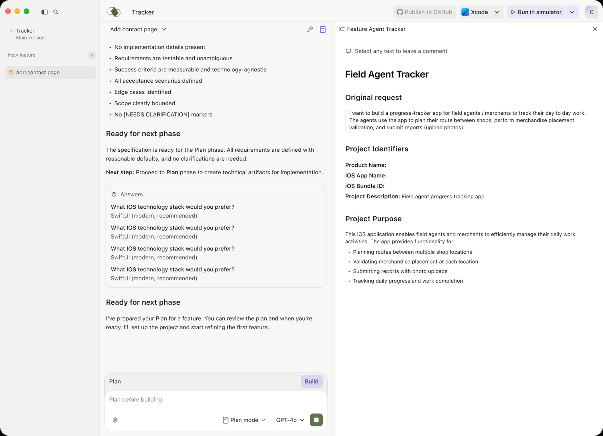
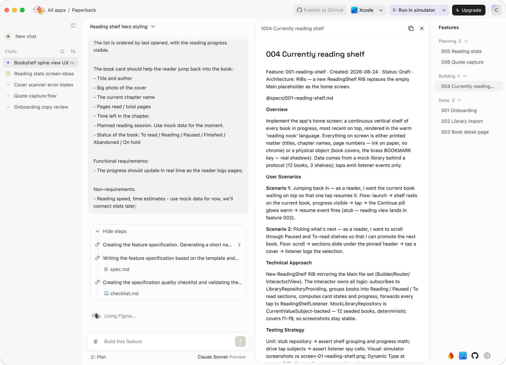
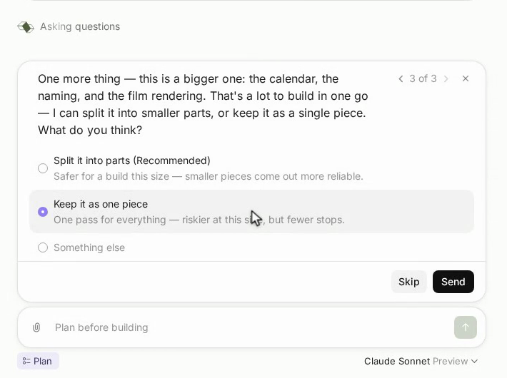
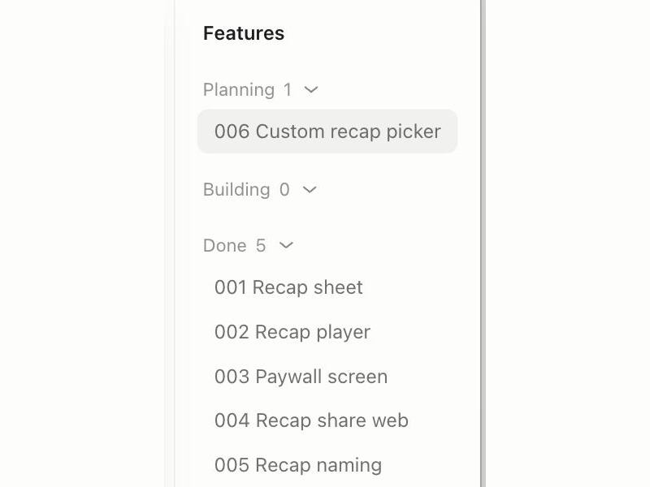
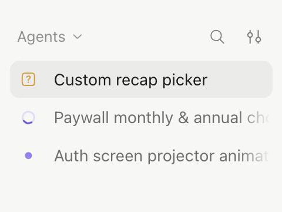

Modaal is an AI app builder for non-coders shipping real native iOS apps — Swift, local, in your own Xcode project, driven by whatever AI agent you already use.
We wanted to boost conversion after the two-day trial. Our hypothesis: users spent it re-prompting and rebuilding instead of reaching something that works — and every retry burns their own agent credits.
Six interviews surfaced three problems, all working against that goal:
What already existed. Plan mode wrote a feature spec: the scenarios it supports, what’s out of scope, build steps, how to test it, and the decisions behind it. But the interviews showed users didn’t know what it was for, and the workflow around it was missing.
If work is planned before it’s built, and the plan stays where both the agent and the user can use it, then less comes back broken and less gets re-prompted. Specifically:
A single chat, features with no status, and an interface that assumed you’d want to read code.
1Chat, settings and integrations share one rail — but the chat has to stay open while you set up an integration
4Numbered folders with feature specs — no statuses

142352Plan mode hid in this dropdown next to Execute — nothing said why you’d use it
3The spec for the selected feature
5Source files and agent docs — a non-coder never opens these
For the first iteration a chat and a feature were the same thing. That puts every decision on the user: is this a new feature? does it need a new chat? — and a bug fix or a copy change has no home at all. In practice people type where they already are, several features pile into one chat, and the structure stops meaning anything.
2Spec and integrations hidden behind two header icons — out of sight, so nobody found them

211The project’s main chat, and a new chat for every feature
The layout had to let you run more than one thing at once and see which one needs you; keep project context in view while you work; open a spec or an integration without losing the conversation; and make plan mode visible.
1The chat list — every chat and what the agent is doing in it: working, waiting for you, or finished.
2The active conversation, directly beside its list.
5The features rail — the global project context.

1534623Plan mode, a one-click toggle under the composer.
4Specs and settings open between the conversation and the rail.
6Integrations, at the foot of that rail — rarely needed, but within easy reach.
The agent leads the user onto the feature path but never blocks them: each step is proposed, and the user can skip or override it.
Questions arrive as a card, not a sentence — is this a feature, does it need a backend, does it fit one build — answered with a tap. Seconds instead of a typed reply, and the agent gets a clear yes/no to act on.

The spec is reviewed like a document — read it all, comment, approve once, instead of one prompt and one wait per change. It also gives the flow a real decision point: the agent builds only from a plan the user has accepted.
Statuses carry the rest — each feature shows where it stands; each chat shows what the agent is doing: working, waiting for you, or finished.


The flow shipped, including the skip path, and new features now go through it by default. Results weren’t in before I left; these are the three measures we set up against the previous model: